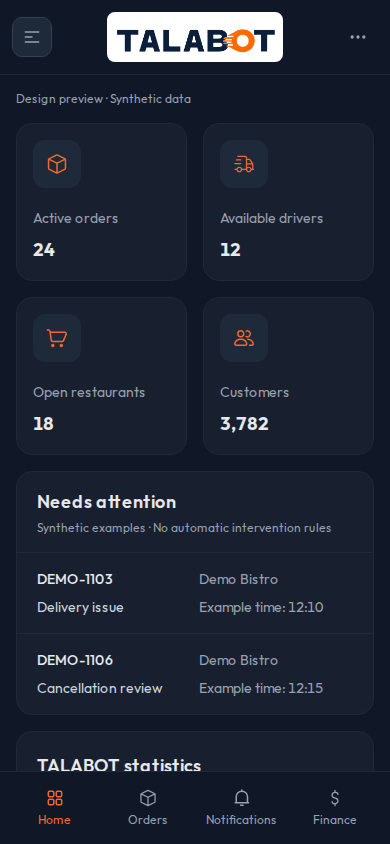
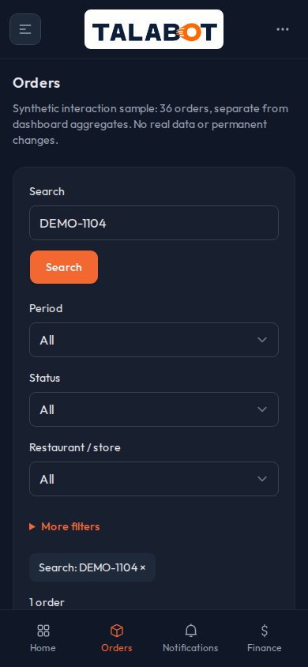
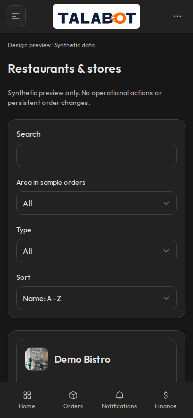

TALABOT Admin — تحسينات D-03 داخل التطبيق
معاينة معزولة ببيانات اصطناعية، تنتظر اعتماد المالك. الصور من الصفحات الفعلية وعلى المقاس واللغة والمظهر نفسيهما. صور Chromium وليست إثبات Safari فعلي. اضغط أي صورة لفتحها وتكبيرها.
الرئيسية والمؤشرات · 390px · light
قبل — التطبيق الأصلي بعد — التحسينات داخل الصفحة الأصلية
بعد — التحسينات داخل الصفحة الأصلية
الرئيسية والمؤشرات · 390px · dark
قبل — التطبيق الأصلي
بعد — التحسينات داخل الصفحة الأصلية
الرئيسية والمؤشرات · 1440px · light
الرئيسية والمؤشرات · 1440px · dark
الطلبات · 390px · dark
قبل — التطبيق الأصلي
بعد — التحسينات داخل الصفحة الأصلية
الحسابات والمنشآت · 390px · light
الحسابات والمنشآت · 390px · dark
قبل — التطبيق الأصلي بعد — التحسينات داخل الصفحة الأصلية
بعد — التحسينات داخل الصفحة الأصلية
الحسابات والمنشآت · 1440px · light
الحسابات والمنشآت · 1440px · dark
الإشعارات · 390px · light
الإشعارات · 1440px · light
الإشعارات · 1440px · dark
تفصيل بطاقة الطلب · 390px · light
تفصيل بطاقة الطلب · 390px · dark
Before source: 28176ba43661335ef2ebbaa0e209940f29905325
Visual models: ed5e33af0f4f1d9b5d4a54c25444a2e8b5916395
After: D-03 integrated review branch. Images from real routes, EN, same synthetic data.